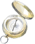
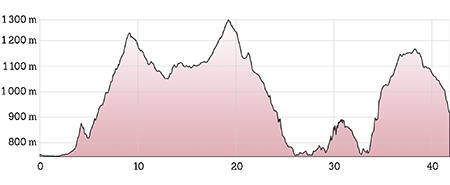
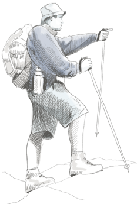
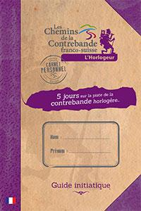
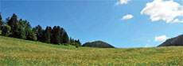
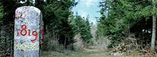
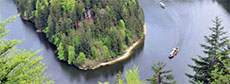
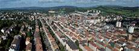

Découvrez le patrimoine naturel et le savoir-faire technique du pays horloger
Par monts et par vaux, plongez dans l'histoire de l'horlogerie franco-suisse en partant sur les sentiers de la contrebande horlogère. De part et d'autre du Saut du Doubs, les 5 étapes de l'itinéraire vous amèneront à découvrir un riche patrimoine historique et naturel : musées de la montre et bornes frontières, bassins et saut du Doubs, urbanisme horloger...
-
Points forts de l'itinéraire
4 musées d'horlogerie, les bornes frontières, le Saut du Doubs, l'urbanisme horloger classé au patrimoine UNESCO ...
 FICHE TECHNIQUE
Les 60 kilomètres de cet itinéraire pédestre vous mèneront de Morteau (F) à La Chaux-de-Fonds (CH). Le voyage retour peut s'effectuer en train en empruntant la Ligne des Horlogers. Composé de 5 étapes, le parcours permet de découvrir plusieurs sites touristiques remarquables parmi lesquels le Saut du Doubs et ses bassins, mais aussi de se familiariser avec le savoir-faire horloger à travers les collections de 4 musées consacrés à la montre et l'horlogerie (Morteau, Villers-le-Lac, Le Locle et La Chaux-de-Fonds). L'itinéraire s'attache également à faire connaître aux randonneurs le patrimoine culturel et architectural de la région : l'urbanisme horloger du Locle et de La Chaux-de-Fonds inscrit au patrimoine mondial de l'Unesco, les bornes frontières qui jalonnent les zones frontalières....
Profil altimétrique
Transports
la Ligne des Horlogers Informations sur les horaires : • Gares de Morteau ou de La Chaux-de-Fonds • www.ter-sncf.com (région Franche-Comté) tél. : 0 800 802 479 • www.sbb.ch (Suisse) tél. : 0 900 300 300
Balisage
Balisage commun sur l’ensemble du sentier

Balisage en France
Régional GR® 5
Balisage en Suisse
Cartes
IGN - France
3524 OT - Morteau Saut du Doubs
Swiss Topo - Suisse
231 - Le Locle 232 - Vallon de St Ismier
-
5 jours sur la piste de la contrebande horlogère
Entrez dans l'aventure...
Un jeu de rôle ludique, participatif et original
Tout au long de votre périple initiatique nous vous invitons à participer à un jeu ! Résolvez les énigmes figurant sur les totems ludiques disposés le long du parcours, récupérez chez nos partenaires musées d’horlogerie français et suisses les pièces d’un mécanisme et transportez-les jusqu’à la Chaux-de-Fonds. Ces pièces vous serviront à actionner un engrenage mystérieux d’où sortira un présent bien mérité qui récompensera votre apprentissage d’horlogeur.
Sur les traces de Philémon, un ancêtre horlogeur, initiez-vous à l'un des plus beaux métiers du monde. Avec la complicité de cet aïeul, faites votre apprentissage en horlogerie et percez la connaissance des maîtres du temps.
 -
Étapes de l'itinéraire
Morteau - Le Vieux Châteleu (France)
Distance
9.50Denivele
484mTemps de marche
5hCette première étape commence au musée de l’Horlogerie du Haut-Doubs à Morteau. Vous traversez ensuite la plaine de Morteau, vestige d’un lac paléolitique, au milieu de laquelle s’écoulent paresseusement les eaux du Doubs.
L’ascension commence dans la forêt sous le Mont Gaudichot jusqu’au lieu-dit du Châtaignot au dessus duquel vous atteignez le point culminant de cette étape. Vous redescendez ensuite dans la combe vers le Vieux Châteleu. Attention, il n’y a pas de possibilité de ravitaillement le long du parcours.
À voir sur le sentier
Le paléolac de Morteau
Mont ChâteleuÀ quelques pas du sentier
Fonderie de cloches Obertino
Les fermes-musées du Pays Horloger
Belvédère du Mont ChâteleuLe Vieux Châteleu - Sur La Roche (France)
Distance
11.80Denivele
215mTemps de marche
3h30Cette deuxième étape vous conduit à la frontière franco-suisse. Après avoir quitté le Vieux Châteleu, vous passez au lieu-dit “Les Cernoniers“ où vous découvrez la chapelle Saint-Anne et admirez des fermes à tuyé, cheminée typique du Haut-Doubs. Puis le chemin se dirige vers le Meix Lagor, où vous pouvez vous restaurer.L’itinéraire longe ensuite la frontière où les bornes matérialisent encore aujourd’hui la limite entre les deux pays. Le chemin vous emmène enfin jusqu’au lieu-dit “Sur la Roche“ où s’achève cette deuxième étape.
À voir sur le sentier
La ferme Chopard
Chapelle Saint AnneÀ quelques pas du sentier
Sauge Artisans du Bois
Grotte de la Grande Cave
Ancienne borne frontièreSur La Roche - Les Brenets (France - Suisse)
Distance
13.90Denivele
210mTemps de marche
4hPour cette étape, vous descendez sur Villers-le-Lac où le Musée de la Montre vous attend. Le parcours emprunte le GR5 - GTJ, longe le Lac de Chaillexon (appelé Lac des Brenets en Suisse), puis surplombe les Bassins du Doubs. Le chemin descend ensuite jusqu’au site du Saut du Doubs où plusieurs belvédères vous permettent d’admirer la somptueuse cascade. Attention, pour le retour, vous devez prendre le bateau de la compagnie NLB, côté suisse, situé après la passerelle, pour rejoindre Les Brenets et la fin de l’étape (dernier départ autour de 17h en saison ; se renseigner auprès de la compagnie).
À voir sur le sentier
Musée de la montre
Bassins et Saut du Doubs
Grotte du Roi de PrusseÀ quelques pas du sentier
Chapelle des Bassots
Belvédère des TaillardsLes Brenets - Le Locle (Suisse)
Distance
11.60Denivele
409mTemps de marche
4h30
L’itinéraire surplombe les Bassins du Doubs côté suisse pour descendre jusqu’au Saut du Doubs. Une montée assez raide par le bien nommé “sentier des contrebandiers“ vous conduit ensuite jusqu’aux pâturages des Endroits.
Une fois cette ascension terminée, vous n’avez plus qu’à redescendre vers la ville du Locle et son urbanisme horloger classé au patrimoine mondial de l’UNESCO. Votre passage au Musée d’horlogerie du Locle dans le Château des Monts, vous permet de découvrir les merveilles du savoir-faire horloger. Attention, il n’y a pas de possibilité de ravitaillement le long du parcours.
À voir sur le sentier
Musée de l'horlogerie du Locle
Murs de pierres sèches
Contrebandier à l’affûtÀ quelques pas du sentier
La Tour Jurgensen
Les Moulins souterrains du Col des Roches
Musée des Beaux-Arts du LocleLe Locle - La Chaux-De-Fonds
Distance
14.00Denivele
350mTemps de marche
4h30Cette dernière étape sur votre parcours d’horlogeur vous emmène à la Ferme Modèle après une montée depuis Le Locle. Marchant sur les pas des révolutionnaires, vous vous dirigez vers La Chaux-de-Fonds dont vous pouvez observer la particularité architecturale de l’urbanisme horloger labellisée UNESCO.Après un passage au Musée international d’horlogerie, le sentier se termine à l’Espace de l’Urbanisme Horloger. Depuis la gare de La Chaux-de-Fonds, vous pouvez prendre la Ligne des Horlogers pour rentrer à Morteau, train autrefois utilisé par certains contrebandiers.
À voir sur le sentier
Musée International de l'horlogerie
Urbanisme horloger
Bois du petit-chateâu
Tour EspacitéÀ quelques pas du sentier
Villas Le Corbusier
Point de vue sur le Lac de Moron
Musée Paysan et artisanal